# Imports
import arviz as az
import numpy as np
import pandas as pd
import pymc as pm
import pytensor.tensor as pt
import matplotlib.pyplot as plt
import scipy.stats as st
import seaborn as sns
import seaborn.objects as so
import statsmodels.formula.api as smf
from formulae import design_matrices as dm
rng = np.random.default_rng(35)
plt.style.use('bmh')
plt.rcParams['axes.axisbelow'] = True
%matplotlib inlineBayesian Ordinal Regression in PyMC
Bayesian
PyMC
ordinal
Unravelling the mysteries of ordinal models
Ordinal data is everywhere in social and behavioural science. People indicate their responses to questionnaire items by selecting a response out of a set of available options, such as disagree, neutral, agree, or rate their preferences on a numeric scale with a few discrete options (e.g. 1, 2, 3, 4). The longstanding approach to analysing this data is to simply treat it as though it were truly continuous, applying the usual techniques that assume Gaussian distributions, like OLS and ANOVA. This ignores the very real possibility that the distances between the categories may not be fixed and equal. Its easy to imagine situations where the gap between a 3 and a 4 on a scale is small, but a big jump exists between selecting 4 over 5.
Accordingly, there’s a lot of work over the last few years that convincingly demonstrates that treating ordinal data as continuous is not a good idea, and can often lead to bias in the conclusions or even getting the sign of relationships incorrect. Ordinal data is modelled much more accurately using an appropriate likelihood function that can express the ordinal nature of the observed variable. Unfortunately, fitting and interpreting these models can be difficult to do, and is something I’ve struggled with for quite a while.
Using Bayesian inference, its straightforward to express a model that expresses ordindal data, and then extend that to including predictors, which is almost always the needed use case in applied statistics. We’ll work through some use cases with PyMC, laying out the bare bones of the model, different approaches, and then move onto full regression modelling with an ordinal outcome through a few different datasets.
Are the latent variables in the room with us?
First though, some theory. Understanding this part can be tricky, but is key to grasping the way ordinal models work. Ordinal models assume a latent, continuous variable that is unobserved. This is the variable of interest - a persons tendency to endorse the statement, find a face attractive, their level of agreement to the statement, and so on. We make assumptions about the kind of distribution this variable can take - typically its the normal or logistic distribution. But to realise the discrete and ordered nature of the responses, we must impose a set of thresholds or cutpoints onto this distribution to slice it into categories. We can then work out the probability density within a category, and use those probabilities to assess the frequency with which a response will appear. If this is confusing, don’t worry. Writing down the steps and plotting some data will hopefully clear things up.
Simulating ordinal data with PyMC from scratch
First, lets import some packages, and then make some assumptions about what we want to see. Imagine we are trying to simulate a dataset where 1000 participants indicate their response to the question “I like chocolate”. We will imagine there is a latent normal distribution that governs this response, and it has a mean of zero, and a standard deviation of 1 (i.e., the standard normal). People are however forced to respond to this statement on a 1-5 scale, indicating their agreement (1 = strong dislike, 5 = strong like).
What might a distribution of ordinal responses to this question look like? For me, I’d imagine a lot of people might respond with a four or five - i.e., a four and five have a high probability of occuring. A smaller minority might select three, and not a lot of people might select one, two, or three. Lets see if we can have the normal distribution help us realise that, using SciPy.
Lets remind ourselves of the normal distributions appearance:
# Plot the normal
x = np.linspace(-3, 3, 1000) # Values to evaluate
standard_normal = st.norm(0, 1) # Our standard normal, mean 0, SD 1
# Plot the probability density function of normal
fig, ax = plt.subplots(1, 1, figsize=(8, 4))
ax.plot(x, standard_normal.pdf(x), lw=2, color='black');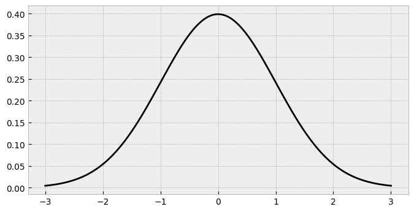
The standard normal has most of its probability mass around zero, and less in the tails. How might we carve it up so that responses of 1 and 2 are less frequent, 3 is a bit more common, and 4 and 5 are most popular? We had to add add the thresholds in a sensible position to chop the distribution up.
In ordinal regression, there are always K-1 cutpoints. If we want 5 responses, we must place 4 thresholds. But where do they go? How would they translate to probabilities of responses? Well, we can use the cumulative density function of the standard normal to figure things out. Lets see what we mean by this. Imagine we place a cutpoint at -2, and a cutpoint at -1, which would correspond to the responses of 1 and 2 (strong dislike to dislike of chocolate) respectively. That would look like this:
# Add two cutpoints
ax.axvline(-2, color='black', lw=0.5) # -2
ax.axvline(-1, color='black', lw=0.5) # -1
fig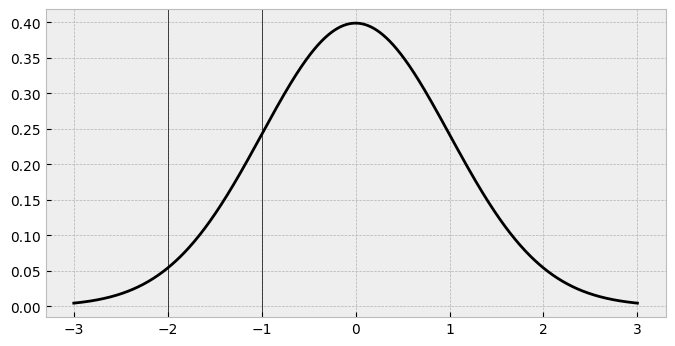
Looking at these cutpoints, we can get a sense that for the area up to the first one, there’s not much probability. Between the first and second one there’s quite a bit of a bigger amount, too. But precisely how much probability is there? Remember, this probability is going to exactly correspond to the probability of seeing a 1 and a 2 in our chocolate data. We can work out this using the cumulative density function (CDF) of the normal distribution. This tells us the probability of all the possible responses up to and including the threshold, and essentially is calculating the area under the curve. For cutpoint 1 (-2), the cdf can be obtained easily:
# Standard normal knows the answer
cut1_cdf = standard_normal.cdf(-2)
print(cut1_cdf)0.022750131948179195We are essentially computing the area in the shaded region below:
# Fill in the area
ax.fill_between(x, standard_normal.pdf(x), where=standard_normal.cdf(x) <= standard_normal.cdf(-2), color='blue')
fig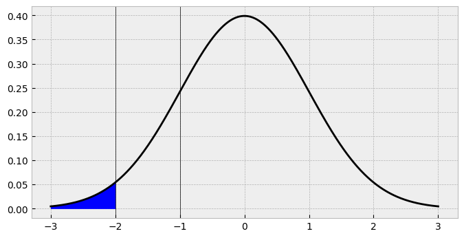
There we have it - that’s the probability of seeing a 1 in our data, if we keep the threshold there. If we repeat the same thing for second threshold, we probability of all the possible responses up to and including the second threshold, we have this:
# Standard normal still knows the answer
cut2_cdf = standard_normal.cdf(-1)
print(cut2_cdf)
# Fill in the area
ax.fill_between(x, standard_normal.pdf(x), where=standard_normal.cdf(x) <= standard_normal.cdf(-1), color='red')
fig0.15865525393145707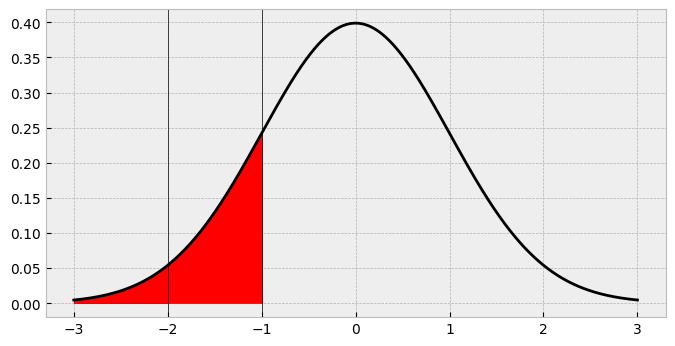
So the probability of a 2 in our data is going to be about 16%, right? Not so fast. Looking at the shaded region its clear that this is actually overshadowing the first area. What we need is the area between -2 and -1, between the first and second cutpoints! How do we find this? Easily enough - just subtract the cdf up to -2 from the cdf up to -1!
# Probability of a 2
print(cut2_cdf - cut1_cdf)
ax.fill_between(x, standard_normal.pdf(x), where=standard_normal.cdf(x) <= standard_normal.cdf(-1), color='red')
ax.fill_between(x, standard_normal.pdf(x), where=standard_normal.cdf(x) <= standard_normal.cdf(-2), color='blue')
fig0.13590512198327787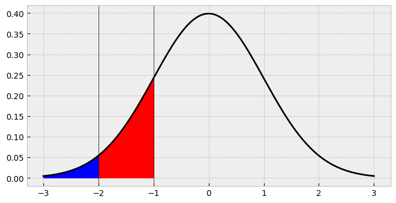
So the probability of a 2 is actually about 14%, and we’ve now correctly identified the area we want. This point highlights a key aspect of ordinal models. They carve up a latent distribution, and probabilities of a given response (e.g., 1, 2) are generated by subtracting the cdf of cutpoint c-1 from cutpoint c.
Lets now throw in the rest of the thresholds.
# Define thresholds as a list
thresholds = [-2, -1, -0.5, 0.25]
# Plot the set of thresholds on a new figure
fig, ax = plt.subplots(1, 1, figsize=(8, 4))
ax.plot(x, standard_normal.pdf(x), lw=2, color='black')
# Shade the cutpoints and add them
for alpha, cut in zip(np.linspace(1, .1, num=4), thresholds):
ax.axvline(cut, color='black', lw=0.5)
ax.fill_between(x, standard_normal.pdf(x),
where=standard_normal.cdf(x) <= standard_normal.cdf(cut),
alpha=alpha)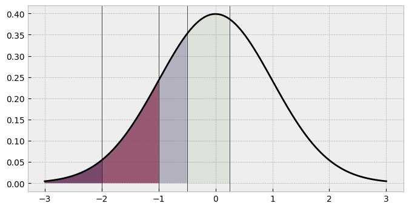
What are the corresponding probabilities here? Visually, its clear that the fourth shaded area (response 4’s portion of the probability pie) and the unshaded area (response 5) have larger areas. We can compute them by subtracting each category from its previous one, which is easy using NumPy slicing.
# get the cdf of each threshold
cat_probs = standard_normal.cdf(thresholds)
# Subtract each probability from its previous
cat_probs[1:] - cat_probs[:-1]array([0.13590512, 0.14988228, 0.29016879])Not enough probabilities here. We need 5, not three! We can solve this issue with a moment’s reflection. The probability of the very first category is equal to its cumulative density function. So we dont need to subtract a thing from that. The final probability - of response 5 in our case - should be the remaining probability left over after the rest of the probabilities have been computed. After all, these values will all sum to one, since we are dividing all of the probability of responses among the available responses. A simple computational trick we can use here is to book-end the cat_probs variable with a zero (left) and a one (right). That way, the slice operation will allow all the probabilities to be computed easily. In fact, this trick is used in PyMC to calculate the probabilites in a proper model, so its worth stating here. Here we go:
# Bookend
cat_probs = np.concatenate(
[np.zeros(1),
cat_probs,
np.ones(1)]
)
# Get the response probabilities
response_probs = cat_probs[1:] - cat_probs[:-1]
response_probsarray([0.02275013, 0.13590512, 0.14988228, 0.29016879, 0.40129367])And, finally, we can now get what we turned up for. A set of ordinal responses for our imaginary participants on how much they like chocolate. How to get this? Well, we can use a categorical distribution. This is the simplest kind of distribution. We simply provide a set of probabilities, the number of which indicate how likely each option is. PyMC has a nice Categorical distribution that we will now sample from, and compare the counts of the data to the response probabilities generated above.
# Actually get the responses, convert to Series
chocolate = pm.draw(pm.Categorical.dist(p=response_probs), draws=1000, random_seed=rng)
chocolate = pd.DataFrame(chocolate, columns=['chocolate_preference'])
# Show
sns.countplot(data=chocolate, x='chocolate_preference');
print(chocolate.value_counts(normalize=True).sort_index())chocolate_preference
0 0.016
1 0.153
2 0.154
3 0.294
4 0.383
Name: proportion, dtype: float64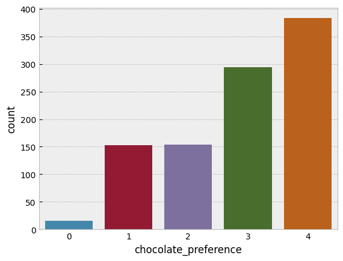
That is a pretty close match to the normal distribution cutpoints we generated! You will notice the scale doesn’t run from 1-5 but zero to four. This does not matter at all, if we wanted we can add one to the output without changing anything. When working with ordinal models in PyMC we make sure the data runs from zero to K, the max response value. Add or subtract whatever you need to make sure the lowest possible response is zero.
Recovering parameters of an ordinal distribution with PyMC - the Hard Way
So far, we’ve generated some data from scratch, working backwards from the latent distribution to the observed data. But how would we model this data if we collected it in the wild, where we can only work from the observed ordinal data to make inference about the latent distribution? PyMC will make this easy for us, but we first need to make some assumptions and pin some things down, in a statistical sense.
When we are working with ordinal models, we have several parameters we may want to estimate: - The K-1 thresholds. With responses that can run from zero to K (e.g. 0, 1, 2, 3, 4, K being 5), we can estimate K-1 ordered thresholds. - The location or mean of the underlying latent distribution. - The scale or standard deviation of the underlying distribution.
This was hard for me to get my head around, but if you think about it for a while, you realise that you cannot estimate all of these at once. The model will be undetermined if you try to estimate all of these parameters. Without fixing down any two of these parameters, the model can’t be estimated, because each parameter set is estimated relative to another. For example, when we set the mean and standard deviation to zero and one above, we could place the thresholds wherever we liked to get the right probabilities within the bounds set by the distribution. As we’ll see later, we can also fix the first and last threshold to a constant value too, and then the distribution and remaining parameters will shift around those constraints to accommodate the probabilities.
In many examples of ordinal models, a standard normal cumulative density function is used, which implicity sets the mean and standard deviation to zero. Thats OK sometimes, but not always an assumption you’d want to make. Below, we write a very explicit PyMC model that will try to recover the thresholds we set above on the chocolate dataset. We’ll rely on the dims and coords arguments to make thing easy to manage. Note that this model will look very complex, because its explicitly layout out all the probability calculations, distributions to use, and so on. This will be simplifed later but this version could be adapted for complex problems - e.g., assuming the latent distribution is a t-distribution or similar.
# Figure out K
K = 5 # the number of possible responses
Kc = K - 1 # Number of cutpoints
latent_mean = 0 # Fixed mean
latent_sigma = 1 # Fixed sigma
# Set the coordinates
c = {'Kc': range(Kc),
'N': range(len(chocolate))
}
with pm.Model(coords=c) as ordinal_chocolate:
# First, priors on cutpoints, which are normally distributed themselves,
# and transformed to be ordered.
# We set them along the range of the latent distribution - note that we are doing this relative
# to the knowledge we are fixing mean and sigma
# Notice also the small SD, which says these cuts should not vary too much around the means, revisit as needed
cutpoints = pm.Normal('cutpoints',
mu=np.linspace(-1, 1, num=Kc),
sigma=2,
transform=pm.distributions.transforms.univariate_ordered,
dims='Kc')
# Working out the threshold CDFs from a distribution of choice, we set here to be normal with parameters fixed
# if we wanted to, we could replace this with another distribution or swap out the fixed constants for priors
cdf_getter = pm.Normal.dist(latent_mean, latent_sigma)
# Get the CDFs of the cutpoints using logcdf, then exponentiate
cdfs = pm.logcdf(cdf_getter, cutpoints).exp() # These are all the cumulative density probabilities now
# Bookend the cdfs before subtraction using PyTensor - exactly the same as NumPy, just works for PyMC tensor variables
cdfs = pt.concatenate(
[pt.zeros(1),
cdfs,
pt.ones(1)]
)
# Compute probabilities
p = cdfs[1:] - cdfs[:-1]
# Place into a categorical distribution likelihood
pm.Categorical('y', p=p, observed=chocolate['chocolate_preference'].values, dims='N')
# Sample the posterior and then the posterior predictive distribution
idata = pm.sample(random_seed=rng)
idata.extend(pm.sample_posterior_predictive(idata))Auto-assigning NUTS sampler...
Initializing NUTS using jitter+adapt_diag...
Multiprocess sampling (4 chains in 4 jobs)
NUTS: [cutpoints]
/Users/alexjones/opt/anaconda3/envs/pyTen/lib/python3.10/site-packages/pytensor/compile/function/types.py:970: RuntimeWarning: invalid value encountered in add
self.vm()/Users/alexjones/opt/anaconda3/envs/pyTen/lib/python3.10/site-packages/pytensor/compile/function/types.py:970: RuntimeWarning: invalid value encountered in accumulate
self.vm()100.00% [8000/8000 00:16<00:00 Sampling 4 chains, 0 divergences]
/Users/alexjones/opt/anaconda3/envs/pyTen/lib/python3.10/site-packages/pytensor/compile/function/types.py:970: RuntimeWarning: invalid value encountered in add
self.vm()
/Users/alexjones/opt/anaconda3/envs/pyTen/lib/python3.10/site-packages/pytensor/compile/function/types.py:970: RuntimeWarning: invalid value encountered in add
self.vm()
Sampling 4 chains for 1_000 tune and 1_000 draw iterations (4_000 + 4_000 draws total) took 35 seconds.
Sampling: [y]100.00% [4000/4000 00:17<00:00]
That’s a lot to take in, but the model has sampled with a few warnings. Lets examine both the posterior of the cutpoints, as well as the posterior predictive distribution.
# Get distribution of cutpoints
az.plot_posterior(idata,
hdi_prob=.95,
lw=2,
color='black',
ref_val=thresholds);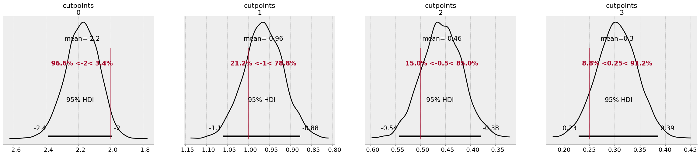
az.plot_ppc(idata);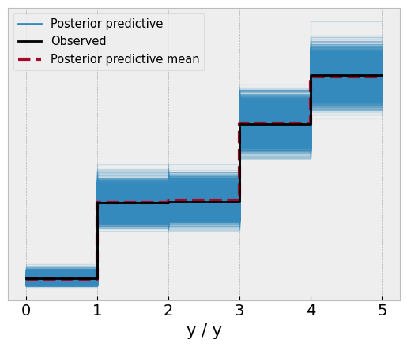
While the model didn’t quite nail the thresholds, it managed to capture them within the 95% credible intervals of each parameter. Reassuringly though, the model has a good approximation of the data, with the posterior predictive check aligning almost perfectly with the observed data.
Recovering parameters - the easy way
The above model is a lot to take in. While we will always specify priors over the cutpoints, specifying the distribution to use to calculate the cumulative density function as well as computing the category probabilities manually is a lot! Fortunately, PyMC has a convenience likelihood distribution that allows us to bypass a lot of the complexity of the above model in fewer lines of code. The above parameterisation is worth knowing though, as it allows us to expand our capabilities to more complex ordinal data. Before we leave behind the chocolate data, I’ll rewrite the model above to expand on the fantastic pm.OrderedProbit distribution which will encompass a lot of the code in the above model. Note that ‘probit’ simply refers to the use of a normal distribution to model ordinal data, as we’ve been doing.
# Rewrite to leverage orderedProbit
with pm.Model(coords=c) as probit_chocolate:
# First, priors on cutpoints
cutpoints = pm.Normal('cutpoints',
mu=np.linspace(-1, 1, num=Kc),
sigma=2,
transform=pm.distributions.transforms.univariate_ordered,
dims='Kc')
# Likelihood of orderedProbit
# Eta is the mean of the latent normal
# Sigma is the SD
# Cutpoints are the cutpoints
# This function internally sets the distribution to a normal with eta and sigma
# Evaluates the CDF,
# and computes probabilities to pass to a Categorical distribution
pm.OrderedProbit('y', eta=0, sigma=1,
cutpoints=cutpoints,
observed=chocolate['chocolate_preference'].values
)
# Sample the posterior and then the posterior predictive distribution
idata = pm.sample(random_seed=rng)
idata.extend(pm.sample_posterior_predictive(idata))Auto-assigning NUTS sampler...
Initializing NUTS using jitter+adapt_diag...
Multiprocess sampling (4 chains in 4 jobs)
NUTS: [cutpoints]100.00% [8000/8000 00:18<00:00 Sampling 4 chains, 0 divergences]
Sampling 4 chains for 1_000 tune and 1_000 draw iterations (4_000 + 4_000 draws total) took 34 seconds.
Sampling: [y]100.00% [4000/4000 00:17<00:00]
# Show results again
fig, ax = plt.subplots(1, 5, figsize=(30, 5))
# Get distribution of cutpoints
az.plot_posterior(idata,
hdi_prob=.95,
lw=2,
color='black',
ref_val=thresholds,
ax=ax[:-1])
# Plot PPC
az.plot_ppc(idata, ax=ax[-1]);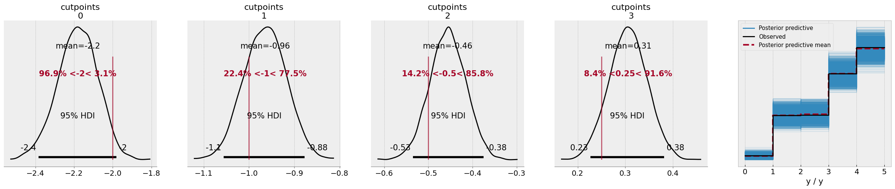
The results look more or less the same, as you can see - but there’s no warnings from the model this time, as the PyMC developers have much cleaner functions behind the scenes to ensure stable computations.
A flag in the ground - fixing cutpoints to estimate the location and scale
We’ll now examine a dataset in which the above approach - fixing mean and sigma to 0 and 1, respectively - simply doesn’t work, and highlight an approach to orindal modelling that I am most convinced by. The example data here is from the excellent book Doing Bayesian Data Analysis 2nd Edition, by John Kruschke. In the chapter on ordinal modelling, Kruschke provides a dataset (OrdinalProbitData-1grp-1.csv, get the book/data here) in which he takes the approach of fixing the top and bottom cutpoints of the model, and estimates the mean and sigma of the latent distribution (as well as the remaining thresholds). This is a particularly convincing approach, at least to me, because it allows for clever use cases such as comparing the latent means of two ordinal distributions (no more t-test style analyses), as well letting the mean be estimated by a linear combination of predictor variables with an error term, as in linear regression. First, lets read in Kruschke’s data, and see what our usual approach gets us, fixing the mean and sigma to zero and one.
# Read in data, subtract one from the observed data
one_group = (pd.read_csv('OrdinalProbitData-1grp-1.csv')
.assign(y=lambda x: x['Y'].sub(1))
)
display(one_group.head())
sns.countplot(data=one_group, x='y');| Y | y | |
|---|---|---|
| 0 | 1 | 0 |
| 1 | 1 | 0 |
| 2 | 1 | 0 |
| 3 | 1 | 0 |
| 4 | 1 | 0 |
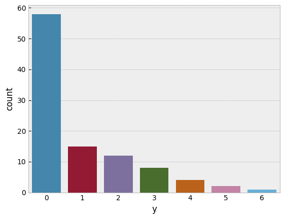
Lets try to model this using the approach we’ve seen so far. We’ll see if this generates the posterior-predictive fit we want.
# Set number of values
K = 7
Kc = K - 1
# Coords
c = {'Kc': range(Kc),
'N': range(len(one_group))
}
with pm.Model(coords=c) as dbda:
# Priors on the cutpoints as before - note they are in relation to a standard normal
cutpoints = pm.Normal('cutpoints',
mu=np.linspace(-2, 2, num=Kc),
sigma=2,
transform=pm.distributions.transforms.univariate_ordered,
dims='Kc')
# Fix 0 and 1 in the orderedProbit
pm.OrderedProbit('y', eta=0, sigma=1,
cutpoints=cutpoints,
compute_p=False,
observed=one_group['y'].values)
idata = pm.sample(random_seed=rng)
idata.extend(pm.sample_posterior_predictive(idata))Auto-assigning NUTS sampler...
Initializing NUTS using jitter+adapt_diag...
Multiprocess sampling (4 chains in 4 jobs)
NUTS: [cutpoints]100.00% [8000/8000 00:15<00:00 Sampling 4 chains, 0 divergences]
Sampling 4 chains for 1_000 tune and 1_000 draw iterations (4_000 + 4_000 draws total) took 33 seconds.
Sampling: [y]100.00% [4000/4000 00:03<00:00]
# Plot the PPC
az.plot_ppc(idata);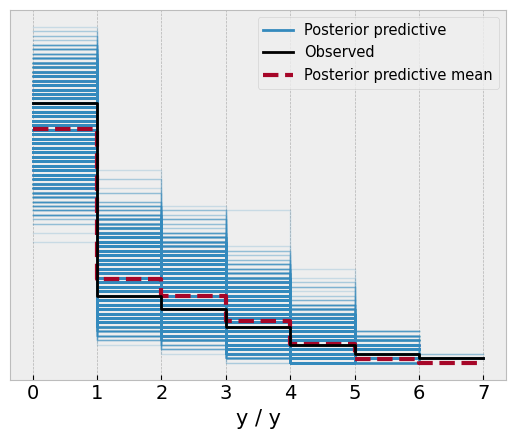
Overall, not too bad. The model captures pretty well the observed frequencies in the data. What about the cutpoints themselves?
# Get cutpoints
az.plot_posterior(idata);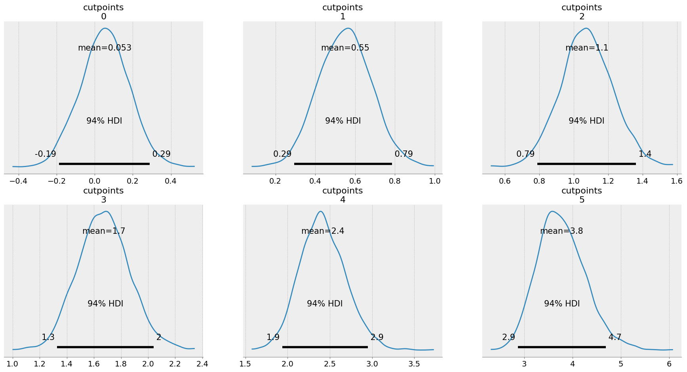
The first cutpoint has an estimate of around 0, and they get progressively higher. How to make sense of this? Remember, we can interpret this on the latent normal distribution. Lets pull out the mean of each cutpoint, put them on a normal distribution, and compare it to the observed frequencies of the data:
# Get cutpoint means
cut_ests = idata['posterior']['cutpoints'].mean(['chain', 'draw']).to_numpy()
# Plot a normal
x_eval = np.linspace(-5, 5, 1000)
fig, (ax1, ax) = plt.subplots(1, 2, figsize=(12, 4))
ax.plot(x_eval, standard_normal.pdf(x_eval), lw=2, color='black')
# Add the cutpoints and shade
for alpha, c in zip(np.linspace(1, .1, num=Kc), cut_ests):
ax.axvline(c, color='black', lw=0.5)
ax.fill_between(x_eval, standard_normal.pdf(x_eval),
where=standard_normal.cdf(x_eval) <= standard_normal.cdf(c),
alpha=alpha)
sns.countplot(one_group, x='y', ax=ax1, color='grey', edgecolor='black');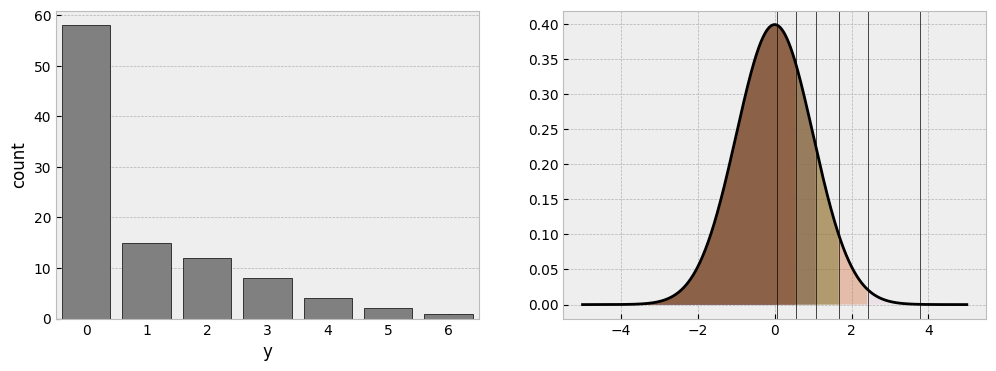
This is what we discussed earlier. If you pin down two parameters - here the mean and the sigma - the cutpoints have to shift around that distribution to find the accommodating regions. Clearly, a huge chunk of the distribution is needed to fit the large number of zero responses, while the tiny amount of response 6 is in the very far reaches of the right tail of the distribution, where almost no probability exists.
For prediction purposes, there is nothing wrong with this parameterisation and distribution, as the predictive fit shows. But if we wanted to interpret the underlying latent normal more clearly, or indeed compare its mean to something else, we need to actually estimate that mean. Kruschke’s solution is elegant - pin down the first and last cutpoints on the scale of the data, by adding about 0.5 to the first observed response in the data, and subtracting 0.5 from the final response in the data. The way we can do this is by estimating the internal cutpoints, book-ending them with constants, and then placing priors on the mean and sigma values of the distribution. Lets see how this works in PyMC:
# Recap - number of responses
K = 7
# Number of cutpoints we'd *usually estimate*
Kt = K - 1
# Number of cutpoints we're going to pin now is 2, so Kc is actually
Kc = Kt - 2
# Coords
c = {'Kc': range(Kc),
'Kt': range(Kt),
'N': range(len(one_group))
}
with pm.Model(coords=c) as dbda_probit:
# Priors on the cutpoints we will estimate. Notice their means now traverse the values of the ordinal scale!
# Also notice the sigma is small, keeping them focused around the stated mean
cutpoints_raw = pm.Normal('cutpoints_raw',
mu=np.linspace(2, 5, num=Kc),
sigma=.2,
transform=pm.distributions.transforms.univariate_ordered,
dims='Kc')
# Now booked and store into a Deterministic
cutpoints = pm.Deterministic('cutpoints',
pt.concatenate(
[
pt.ones(1)*1.5, # The lowest observed data - remember that was 1, not zero!
cutpoints_raw,
pt.ones(1)*6.5 # The highest cutpoint
]
),
dims='Kt'
)
# Priors for mu and sigma - on the scale of the data
μ = pm.Normal('μ', mu=4, sigma=2)
σ = pm.HalfNormal('σ', sigma=3)
# Into orderedProbit
pm.OrderedProbit('y', eta=μ, sigma=σ,
cutpoints=cutpoints,
observed=one_group['y'].values)
idata2 = pm.sample(random_seed=rng)
idata2.extend(pm.sample_posterior_predictive(idata2))Auto-assigning NUTS sampler...
Initializing NUTS using jitter+adapt_diag...
Multiprocess sampling (4 chains in 4 jobs)
NUTS: [cutpoints_raw, μ, σ]100.00% [8000/8000 00:18<00:00 Sampling 4 chains, 0 divergences]
Sampling 4 chains for 1_000 tune and 1_000 draw iterations (4_000 + 4_000 draws total) took 35 seconds.
Sampling: [y]100.00% [4000/4000 00:02<00:00]
# Check the posterior predictive
az.plot_ppc(idata2);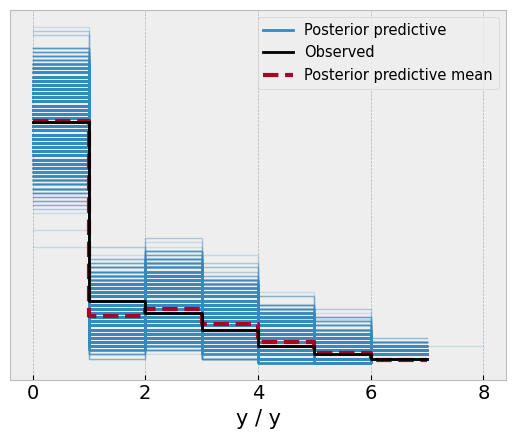
And take a look at the parameters, which closely match those of Kruschke’s reported data.
az.plot_posterior(idata2, var_names=['μ', 'σ', 'cutpoints_raw']);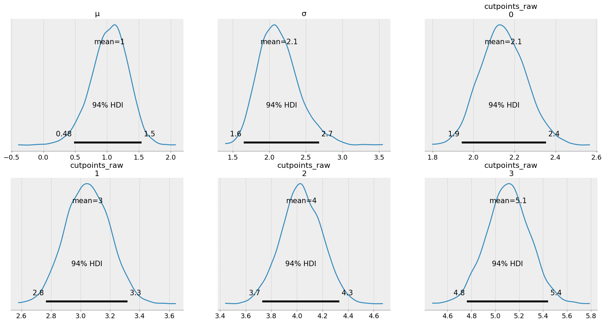
The key insight here is that we have now estimated that the mean of the latent distribution is around 1, and the sigma is 2.1. Lets take a look at the means of the posterior and visualise this distribution we have estimated:
# Aggregate parameters
params = idata2['posterior'][['μ', 'σ', 'cutpoints']].mean(['chain', 'draw'])
# Build a normal that fits the estimates
x_eval = np.linspace(-6, 8, 1000)
new_normal = st.norm(params['μ'], params['σ'])
# Plot
fig, ax = plt.subplots(1, 1, figsize=(8, 4))
ax.plot(x_eval, new_normal.pdf(x_eval), lw=3, color='black')
# Add the cuts
[ax.axvline(c, lw=0.5, color='black') for c in params['cutpoints']]
# Shade
for alpha, c in zip(np.linspace(1, .1, num=Kt), params['cutpoints']):
ax.fill_between(x_eval, new_normal.pdf(x_eval),
where=new_normal.cdf(x_eval) <= new_normal.cdf(c),
alpha=alpha)
# Clip the axis to emphasise range of data, where the original data lived
ax.set(xlim=(0, 8), xticks=range(1, 8));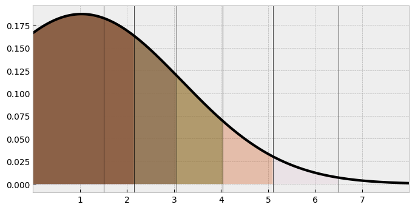
This looks similar to the one we saw in the initial model. But its clear the distribution has ‘shifted’ along the X axis, and is spread out. Either parameterisation is OK, but this one has a lot of benefits, and extends naturally to the linear regression case, as we will see. Kruschke highlights further examples in his chapter, such as comparing the latent means/SDs of two ordinal measures, seamlessly using Bayesian inference to derive distributions of latent mean-difference effect sizes.
When looking hot means not feeling cold
We’re now at a point where we’ve pinned down a method of working with ordinal data to estimate the parameters of the underlying latent distribution. Extending this to a regression context is now natural. Consider a standard linear regression, where the goal is to estimate the expectancy of a normal distribution from a set of linear predictors, as well as the noise of the measure (i.e., the residuals).
To highlight the use case of a true ordinal regression, I am going to use a dataset from social psychology, a paper titled “When looking hot means not feeling cold”. In this study, the authors photographed women on a night out during a cold period in Florida.
The authors asked the women how cold they felt, responding on a 1 (not at all cold) to a 6 (extremely cold) scale. They also measured the tendency for their participants to self-objectify, i.e., show more concern about how they look, rather than how they feel. From the photographs, the researchers also quantified the amount of skin the women showed. Using standard linear regression, the authors reported a statistically significant interaction between the level of self-objectification and skin exposure (after adjusting for the actual temperature), such that only women low in self-objectification with high levels of skin exposure reported feeling colder - those with high levels of self-objectification did not “feel the cold”.
Its worth a read. Its an interesting paper and the authors did a good job testing their theory in an creative way. When the paper came out, the authors sadly received huge backlash because of the marginally significant p-value of the interaction, and lots of people jumped in to re-analyse their data with more covariates, simulations, and more, desperately trying to show the effect was not significant. In my view, all of these criticisms missed the point, which was that the data was probably better suited to being modelled by an ordinal outcome. As an aside, this is the issue with frequentist null-hypothesis significance testing approaches - focusing on that arbitrary threshold of “existence” is silly, and people can be really motivated to knock something to either side of it. With the Bayesian approach, we can incorporate some skepticism into the model as well as modelling it appropriately and see what we find.
I’ve got the data from the Open Science Framework, and am reading it in here. Huge thanks to the authors for sharing their data.
# Read in data and subset out the columns and rows we need
# Also Z-score the predictor variables
hotcold = (pd.read_spss('field data_coded_clean.sav')
.query('`filter_$` == "Selected"')
.filter(items=['ID', 'Cold', 'Self_Obj', 'Temp_True', 'Clothes_RF'])
.pipe(lambda df_: df_.assign(**df_[['Self_Obj', 'Temp_True', 'Clothes_RF']].apply(st.zscore, ddof=1).add_suffix('_Z')))
)
hotcold.head()| ID | Cold | Self_Obj | Temp_True | Clothes_RF | Self_Obj_Z | Temp_True_Z | Clothes_RF_Z | |
|---|---|---|---|---|---|---|---|---|
| 0 | 170.0 | 1.0 | 4.625 | 50.0 | 2.0 | 0.942003 | -0.694347 | -0.542569 |
| 1 | 26.0 | 1.0 | 5.375 | 52.0 | 2.0 | 1.745924 | -0.140646 | -0.542569 |
| 2 | 27.0 | 3.0 | 3.375 | 50.0 | 0.0 | -0.397866 | -0.694347 | -1.567422 |
| 3 | 67.0 | 3.0 | 3.000 | 52.0 | 4.0 | -0.799827 | -0.140646 | 0.482284 |
| 4 | 68.0 | 6.0 | 5.250 | 52.0 | 6.0 | 1.611937 | -0.140646 | 1.507137 |
Lets first recreate their analyses using good ol’ NHST and OLS, which is the prediction of Cold by the interaction of self objectification and skin exposure, adjusting for actual temperature.
# Fit an OLS model
ols_mod = smf.ols('Cold ~ Temp_True_Z + Self_Obj_Z * Clothes_RF_Z', data=hotcold).fit()
# display summary
ols_mod.summary(slim=True)<td>Cold</td> <th> R-squared: </th> <td> 0.060</td> <td>OLS</td> <th> Adj. R-squared: </th> <td> 0.040</td>| Dep. Variable: | |||
|---|---|---|---|
| Model: | |||
| No. Observations: | 186 | F-statistic: | 2.909 |
| Covariance Type: | nonrobust | Prob (F-statistic): | 0.0230 |
<td> 3.4489</td> <td> 0.103</td> <td> 33.615</td> <td> 0.000</td> <td> 3.246</td> <td> 3.651</td> <td> -0.1755</td> <td> 0.100</td> <td> -1.758</td> <td> 0.080</td> <td> -0.373</td> <td> 0.021</td> <td> -0.0069</td> <td> 0.105</td> <td> -0.066</td> <td> 0.947</td> <td> -0.213</td> <td> 0.200</td> <td> 0.1458</td> <td> 0.104</td> <td> 1.400</td> <td> 0.163</td> <td> -0.060</td> <td> 0.351</td>| coef | std err | t | P>|t| | [0.025] | ||
|---|---|---|---|---|---|---|
| Intercept | ||||||
| Temp_True_Z | ||||||
| Self_Obj_Z | ||||||
| Clothes_RF_Z | ||||||
| Self_Obj_Z:Clothes_RF_Z | -0.2063 | 0.098 | -2.111 | 0.036 | -0.399 | -0.013 |
Notes:
[1] Standard Errors assume that the covariance matrix of the errors is correctly specified.
This highlights the contentious interaction that attracted so much social media ire. Lets have this linear model make a prediction to understand the interaction a bit more, which we will also end up doing with a PyMC model. We’ll estimate the feeling of cold for hypothetical individuals with ±1 SD on the clothes variable, and ±1 SD on the self objectivation variable.
# Prediction dataset
predmat = pd.DataFrame(
{
'Self_Obj_Z': [-1, -1, 1, 1],
'Clothes_RF_Z': [-1, 1, -1, 1],
'Temp_True_Z': [0] * 4
}
)
# get estimates
estimates = ols_mod.get_prediction(predmat).summary_frame().filter(items=['mean', 'mean_ci_lower', 'mean_ci_upper'])
# Quick plot
(
so.Plot(data=predmat.assign(**estimates),
x='Clothes_RF_Z', y='mean',
ymin='mean_ci_lower', ymax='mean_ci_upper',
linestyle='Self_Obj_Z')
.add(so.Lines(color='black'), so.Dodge())
.add(so.Dot(color='black'), so.Dodge())
.add(so.Range(color='black', linewidth=1), so.Dodge())
.scale(x=so.Nominal())
.label(x='Skin Exposure', y='Predicted Cold Feeling', linestyle='Self Objectification')
.theme(plt.style.library['bmh'])
)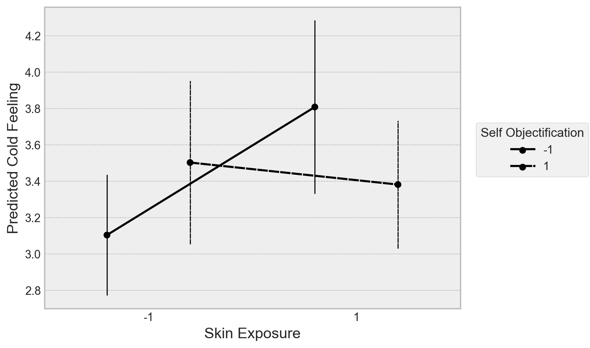
This recreates the overall finding, such that low self-objectifiers feel colder with more skin exposure, high self objectifiers show no evidence for a change. Let’s now build an ordinal regression in PyMC to refit the data with a) a proper ordered likelihood, and b) a bit of regularisation on the priors to limit noisy inference. I only use a basic type of regularisation in the below example, but there are more elaborate ways of doing this.
The key thing to remember here is, when using a normal latent variable, is that the coefficients represent changes in the underlying latent distribution - i.e., if the coefficient were 1, it would indicate a 1-unit increase in the predictor leads to a 1 unit change in the underlying latent distribution.
# Use formulae to build the design matrix
model_design = dm('Cold ~ Temp_True_Z + Self_Obj_Z * Clothes_RF_Z', data=hotcold)
# Obtain X and y
y = np.array(model_design.response) - 1 # Notice subtraction
X = model_design.common.as_dataframe().drop(columns='Intercept') # Remove the intercept column
# Set up the coordinate dictionary
K = 6 # max number
Kc = K - 1 # The number of cutpoints
Kt = Kc - 2 # We are pinning two
# Coord dict
c = {'Kt': range(Kt), # cutpoints to estimate
'Kc': range(Kc), # total cutpoint
'coefs': X.columns, # Coefficients
'N': range(len(y))
}
# Build the model
with pm.Model(coords=c) as hotcold_ordinal:
# Set the X data as mutable, we will later make predictions
Xdata = pm.MutableData('Xdata', np.array(X))
ydata = pm.MutableData('ydata', y)
# First, set cupoints we will estimate
cut_raw = pm.Normal('cut_raw',
mu=np.linspace(2, 5, num=Kt), # on range of data
sigma=0.25,
transform=pm.distributions.transforms.univariate_ordered,
dims='Kt')
# Cutpoints
cutpoints = pm.Deterministic('cutpoints',
pt.concatenate(
[
pt.ones(1)*1.5, # First cutpoint
cut_raw,
pt.ones(1)*5.5 # Second cutpoint
]
),
dims='Kc')
# Model terms
λ = pm.Gamma('λ', alpha=3, beta=3) # The regulariser
β0 = pm.Normal('β0', mu=3, sigma=1) # Intercept
β = pm.Normal('β', mu=0, sigma=λ, dims='coefs') # Coefficients with a hierarchical variability
σ = pm.HalfNormal('σ', sigma=1) # Model error
# Take linear combination
μ = β0 + Xdata @ β
# Likelihood
pm.OrderedProbit('y', eta=μ, sigma=σ,
cutpoints=cutpoints,
compute_p=False,
observed=ydata) Automatically removing 1/187 rows from the dataset.Before we sample this, lets take a look at the model structure. We’re using an ordinal likelihood but the same model structure as the standard OLS used by the authors, but we are adding some regularisation to the parameters to constrain the coefficients some.
# View the model
pm.model_to_graphviz(hotcold_ordinal)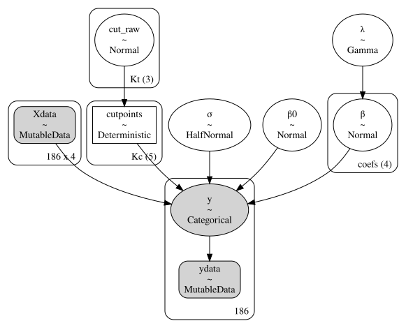
This further highlights that ordinal regression is really a categorical prediction problem. Lets now obtain the posterior and predictive distribution of the model.
# Obtain posterior
with hotcold_ordinal:
idata = pm.sample(random_seed=rng) # Posterior
idata.extend(pm.sample_posterior_predictive(idata)) # Posterior predictive
idata.extend(pm.sample_prior_predictive()) # Also get prior for laterAuto-assigning NUTS sampler...
Initializing NUTS using jitter+adapt_diag...
Multiprocess sampling (4 chains in 4 jobs)
NUTS: [cut_raw, λ, β0, β, σ]100.00% [8000/8000 00:29<00:00 Sampling 4 chains, 1 divergences]
Sampling 4 chains for 1_000 tune and 1_000 draw iterations (4_000 + 4_000 draws total) took 46 seconds.
There were 1 divergences after tuning. Increase `target_accept` or reparameterize.
Sampling: [y]100.00% [4000/4000 00:05<00:00]
Sampling: [cut_raw, y, β, β0, λ, σ]Let’s take a look at the posterior distribution of the interaction, the effect of interest in the paper, as well as the posterior predictive check. We will also submit the interaction coefficient to a Bayes Factor hypothesis test.
# Visualise
fig, ax = plt.subplots(1, 3, figsize=(16, 6))
# Plot posterior of interaction
az.plot_posterior(idata,
var_names='β', coords={'coefs': 'Self_Obj_Z:Clothes_RF_Z'},
hdi_prob=.95, lw=3, color='black',
ref_val=0, ax=ax[0])
# Plot ppc
az.plot_ppc(idata, ax=ax[1]);
# Bayes Factor plot
# Extract data
bf = az.from_dict(
posterior={'interaction': az.extract(idata, var_names='β', group='posterior').sel(coefs='Self_Obj_Z:Clothes_RF_Z')},
prior={'interaction': az.extract(idata, var_names='β', group='prior').sel(coefs='Self_Obj_Z:Clothes_RF_Z')}
)
# Plot BF
az.plot_bf(bf, var_name="interaction", ref_val=0, ax=ax[2]);/Users/alexjones/opt/anaconda3/envs/pyTen/lib/python3.10/site-packages/IPython/core/events.py:89: UserWarning: Creating legend with loc="best" can be slow with large amounts of data.
func(*args, **kwargs)
/Users/alexjones/opt/anaconda3/envs/pyTen/lib/python3.10/site-packages/IPython/core/pylabtools.py:152: UserWarning: Creating legend with loc="best" can be slow with large amounts of data.
fig.canvas.print_figure(bytes_io, **kw)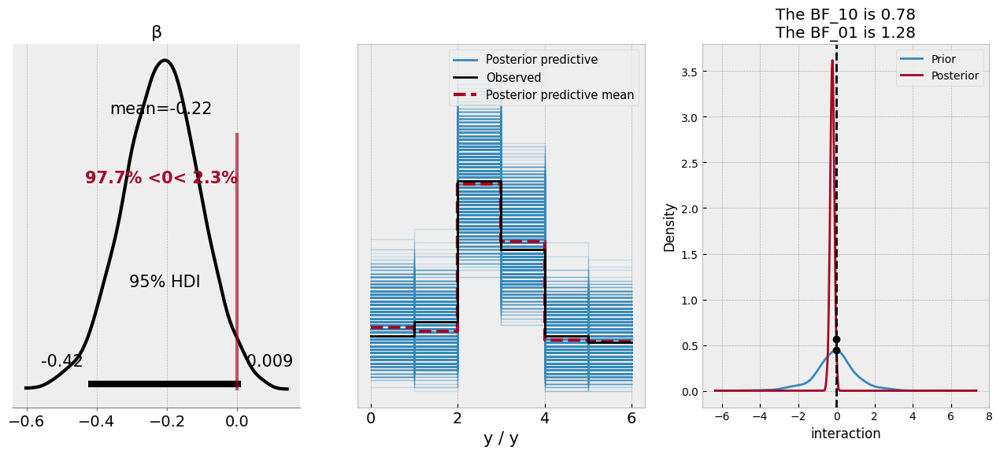
According to the posterior distribution of the coefficient, there is an almost 97% probability of the coefficient being less than zero - it doesn’t quite exclude that magical parameter, but based on the model and the data, we’d deem a negative relationship is likely. The predictive check looks good, mirroring the data. The Bayes Factor plot suggests that the value of zero is similarly likely under both the posterior and prior distribution of the coefficient, which most Bayes Factor proponents would deem an inconclusive finding.
Let’s move beyond these hypothesis tests and see if we can use the model to really dig into the predictions. As our model is Bayesian, the predictions it makes for a datapoint will be a distribution over the possible scale response options. What we’ll now do is ask the model to predict the hypothetical individuals the standard linear model predicted, and thus we can see the likely response profile of feeling cold a hypothetical individual might make. First, let’s make the model return the predictions on new data.
# Have formulae create our design matrix
newX = (model_design
.common.evaluate_new_data(predmat) # the data we made earlier for OLS
.as_dataframe()
.drop(columns='Intercept')
)
with hotcold_ordinal:
# Set new data
pm.set_data({'Xdata': np.array(newX),
'ydata': np.zeros(len(newX)) # placeholder, not important
})
# Predict
predictions = pm.sample_posterior_predictive(idata, extend_inferencedata=False, predictions=True)Sampling: [y]100.00% [4000/4000 00:01<00:00]
Now we have the predictions - which are draws from the posterior predictive distribution, conditional on the hypothetical model inputs - we can get a sense of how the pattern of responses changes at these different levels of skin exposure and self objectification. These predictions are a bit unwieldy at the moment, so it makes sense to aggregate them a bit. For each of the four predicted observations, we can take the frequency of each of the responses in the posterior:
# Get frequencies and add in prediction data, and reshape
freq_counts_posterior = (predictions
['predictions']
.to_dataframe()
.add(1) # adding one to resemble original data
.groupby(['y_dim_2']) # Over each observation
['y']
.value_counts(normalize=True)
.unstack('y')
.pipe(lambda x: pd.concat([predmat, x], axis='columns'))
.melt(id_vars=['Self_Obj_Z', 'Clothes_RF_Z', 'Temp_True_Z'],
var_name='response', value_name='pp')
.replace({'Self_Obj_Z': {-1: 'Low Self Objectify', 1: 'High Self Objectify'},
'Clothes_RF_Z': {-1: 'Low Skin Exposure', 1: 'High Skin Exposure'}})
)
freq_counts_posterior.head()| Self_Obj_Z | Clothes_RF_Z | Temp_True_Z | response | pp | |
|---|---|---|---|---|---|
| 0 | Low Self Objectify | Low Skin Exposure | 0 | 1 | 0.14525 |
| 1 | Low Self Objectify | High Skin Exposure | 0 | 1 | 0.06600 |
| 2 | High Self Objectify | Low Skin Exposure | 0 | 1 | 0.09750 |
| 3 | High Self Objectify | High Skin Exposure | 0 | 1 | 0.11025 |
| 4 | Low Self Objectify | Low Skin Exposure | 0 | 2 | 0.13850 |
And lets see if we can plot these implied predictions across the categories.
(
so.Plot(data=freq_counts_posterior, x='response', y='pp', color='Self_Obj_Z')
.add(so.Bar(alpha=.2), so.Dodge())
.facet('Clothes_RF_Z')
.scale(x=so.Nominal(values=[1, 2, 3, 4, 5, 6]))
.theme(plt.style.library['bmh'])
.layout(size=(10, 5))
)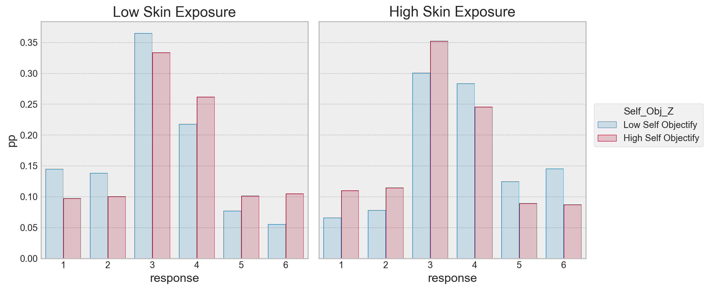
Here we can see the implied probabilites of a response across the conditions the model predicted. For high skin exposure, high self objectifiers are more likely to respond a 1, its about equal for 2, more likely to respond a 3, and beyond that, there is higher probability of a low self objectifier using the higher categories. For low skin exposure, its almost the opposite pattern - high self objectifiers seem to have a higher probability of responding to being colder than low self objectifiers. The highest likelihood is with the responses 3/4 in both cases.
Its possible to simplify (complicate?) this a bit further, by taking the odds ratio of a condition against the other. For example, we can take the odds of a “1” response for a low self objectifying individual under the low skin exposure condition, divide it by the odds of a “1” response for a high self objectifying individual, under the same condition. Lets see what that looks like:
# Compute odds ratios
odd = (freq_counts_posterior
.assign(odds=lambda x: x['pp'] / (1 - x['pp']))
.groupby(['Clothes_RF_Z', 'response']) # comparing self objectifer here, as we will merge over those
.apply(lambda x: x.iloc[1, -1] / x.iloc[0, -1]) # odds of a high self objectifier to a low
.to_frame('odds')
.reset_index()
)
# Plot
(
so.Plot(data=odd, x='response', y='odds', color='Clothes_RF_Z')
.add(so.Bar(), so.Dodge())
.theme(plt.style.library['bmh'])
.label(y='Odds of High Objectifier to Low Objectifier\nselecting response')
)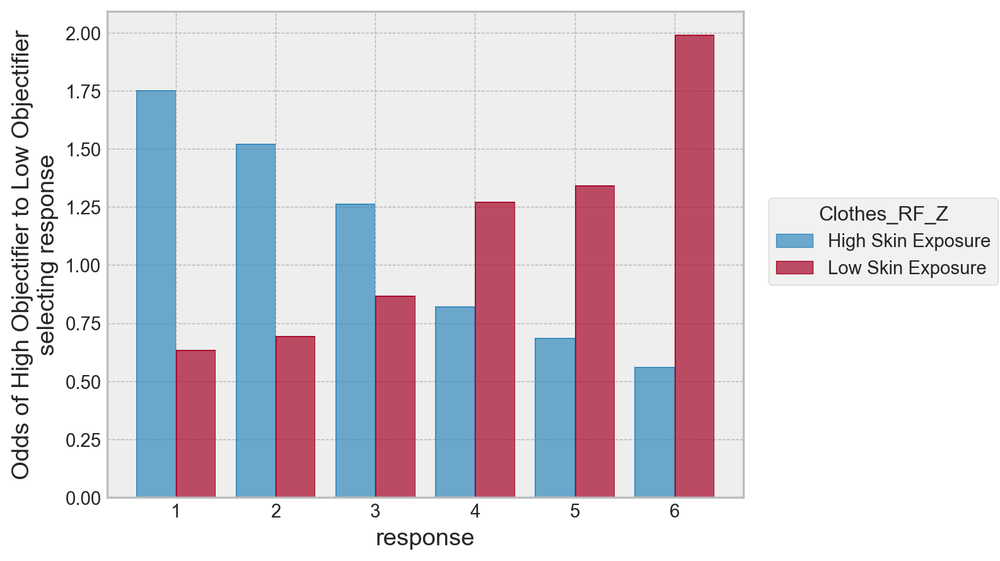
We can see a clear pattern here. For high skin exposure, the odds a high self-objectifier selects a 1 is much greater than a low self objectifier, and the pattern reverses as the response increases up to feeling very cold.
A final note on priors for cutpoints
Throughout the examples used above, I’ve been placing normally distributed priors on each of the cutpoints. This has been mostly fine, though the standard deviation of those normal distributions has sometimes been quite small to make the distribution about each cutpoint narrow. Some may object to this, and indeed, in some of the examples above, reduction of the prior width was required to get the model to estimate.
The Bayesian modelling community have been advocating the use of a Dirichlet prior over the cutpoints (see here). The Dirichlet is a multivariate generalisation of the Beta distribution, generating a set of probabilities that all sum to one. With some tricks and transforms, its possible to use the Dirichlet to set strictly ordered cutpoints.
The trick is to take the cumulative sum across the draws from a Dirichlet, and add and multiply values to it to expand its range (which is naturally always between 0-1). We’ll revisit the data from Kruschke a final time to put Dirichlet priors on the cutpoints. First, lets see a draw from a Dirichlet.
# Get a draw for 5 cutpoints from the Dirichlet
draw1 = pm.draw(pm.Dirichlet.dist(a=np.ones(5)), 1)
print('Five values in the range of 0-1', draw1.round(2))
# How can we constrain order? Use a cumulative sum
print('Five ordered values, range 0-1:', draw1.cumsum().round(2))
# Now expand them to the range of 2.5 to 5.5, like we did earlier for the normal priors
2.5 + draw1.cumsum() * (5.5 - 2.5)Five values in the range of 0-1 [0.06 0.19 0.16 0.58 0.02]
Five ordered values, range 0-1: [0.06 0.25 0.41 0.98 1. ]
array([2.67595003, 3.24229597, 3.71680105, 5.44940491, 5.5 ])The final step above uses a mathematical sleight-of-hand to expand the range. We can expand 0-1 numbers in the range of [a, b] by the simple formula of a + x * (b - a).
More confusion awaits however. As a result of the cumulative sum, the final cutpoint will always be a constant. Before transforming, it will be fixed at 1, so will always take on the value b after transforming. If we want to do the Kruschke-style top and bottom pinned cutpoints, we can actually omit the top cutpoint, as it will fall out of the cumulative-sum Dirichlet, and simply pin the bottom.
Let’s see how to implement this in PyMC using the one_group data.
# Reminder of one-group
K = 7 # number of options
Kc = K - 1 # number of cutpoints in total
Kt = Kc - 1 # We want now to only pin ONE
# Create coordinates
c = {'Kc': range(Kc),
'Kt': range(Kt)}
with pm.Model(coords=c) as dirichlet_prior:
# Cutpoints to estimate
cut_raw = pm.Dirichlet('cut_raw',
a=np.ones(Kt),
dims='Kt')
# Pin lower and transform
cutpoints = pm.Deterministic('cutpoints',
pt.concatenate(
[
np.ones(1)*1.5, # Fixing the first cut
2.5 + cut_raw.cumsum() * (6.5 - 2.5) # The transform of the cumulative sum, top (which we want fixed) - lower
]
),
dims='Kc')
# Mu and sigma
μ = pm.Normal('μ', mu=4, sigma=2)
σ = pm.HalfNormal('σ', sigma=3)
# Into orderedProbit
pm.OrderedProbit('y', eta=μ, sigma=σ,
cutpoints=cutpoints,
compute_p=False,
observed=one_group['y'].values)
idata3 = pm.sample(random_seed=rng)Auto-assigning NUTS sampler...
Initializing NUTS using jitter+adapt_diag...
Multiprocess sampling (4 chains in 4 jobs)
NUTS: [cut_raw, μ, σ]100.00% [8000/8000 00:18<00:00 Sampling 4 chains, 0 divergences]
Sampling 4 chains for 1_000 tune and 1_000 draw iterations (4_000 + 4_000 draws total) took 35 seconds.You definitely get a speedup in sampling! Let’s examine the estimates of the cutpoints:
# Check the output between both models
pd.concat(
[
az.summary(idata3, var_names=['cutpoints', 'μ', 'σ'], kind='stats').assign(model='Dirichlet Prior'),
az.summary(idata2, var_names=['cutpoints', 'μ', 'σ'], kind='stats').assign(model='Normal Prior')
]
)| mean | sd | hdi_3% | hdi_97% | model | |
|---|---|---|---|---|---|
| cutpoints[0] | 1.500 | 0.000 | 1.500 | 1.500 | Dirichlet Prior |
| cutpoints[1] | 2.718 | 0.179 | 2.500 | 3.043 | Dirichlet Prior |
| cutpoints[2] | 3.750 | 0.314 | 3.189 | 4.335 | Dirichlet Prior |
| cutpoints[3] | 4.778 | 0.404 | 4.057 | 5.532 | Dirichlet Prior |
| cutpoints[4] | 5.671 | 0.389 | 4.945 | 6.317 | Dirichlet Prior |
| cutpoints[5] | 6.500 | 0.000 | 6.500 | 6.500 | Dirichlet Prior |
| μ | 1.044 | 0.357 | 0.361 | 1.693 | Dirichlet Prior |
| σ | 2.605 | 0.397 | 1.886 | 3.322 | Dirichlet Prior |
| cutpoints[0] | 1.500 | 0.000 | 1.500 | 1.500 | Normal Prior |
| cutpoints[1] | 2.144 | 0.110 | 1.943 | 2.354 | Normal Prior |
| cutpoints[2] | 3.048 | 0.148 | 2.767 | 3.318 | Normal Prior |
| cutpoints[3] | 4.035 | 0.159 | 3.730 | 4.331 | Normal Prior |
| cutpoints[4] | 5.106 | 0.181 | 4.763 | 5.442 | Normal Prior |
| cutpoints[5] | 6.500 | 0.000 | 6.500 | 6.500 | Normal Prior |
| μ | 1.035 | 0.289 | 0.483 | 1.543 | Normal Prior |
| σ | 2.131 | 0.280 | 1.649 | 2.679 | Normal Prior |
The results look broadly similar here, which is reassuring. But, the parameters of the Dirichlet prior model are closer to those reported in the text. While an ordered transform of the normal distribution certainly works, in cases where we know the generating parameters, a model formulation that brings us closer to that is probably to be preferred, so its really vital to understand this formulation, even if at first it is tricky to comprehend.
%load_ext watermark
%watermark --iversionsstatsmodels: 0.13.5
numpy : 1.25.0
scipy : 1.11.1
pymc : 5.6.0
pytensor : 2.12.3
arviz : 0.15.1
matplotlib : 3.7.2
pandas : 2.0.3
seaborn : 0.12.2